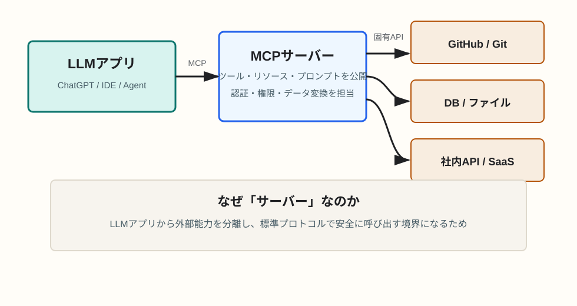

AIを介した開発
MCPはなぜサーバーを立ち上げる必要があるのか
MCPサーバーは、LLMアプリに外部ツールやデータへの安全な入口を渡すための独立した接続先です。「大げさなWebサーバー」ではなく、LLMと外部世界の間に置く標準化されたアダプターと考えると理解しやすくなります。
簡潔なQ&A
- Q. MCPはなぜサーバーを立ち上げる必要があるのか？
- A. LLMアプリ本体から外部ツール接続を分離し、標準プロトコルで安全に呼び出せる境界を作るためです。サーバーがツール一覧、入力仕様、実行結果、権限管理、データ変換を受け持ちます。
- Q. サーバーとは常にインターネット上の常駐サーバーなのか？
- A. いいえ。ローカルプロセスとして起動し、標準入出力でLLMクライアントと通信する構成もあります。重要なのは「別プロセスとして能力を公開する」点です。
- Q. 直接ライブラリをimportする方式ではだめなのか？
- A. 単一アプリ内なら可能ですが、LLMクライアントごとに実装がばらつきます。MCPにすると、ツール提供側は一度サーバーを用意すれば、複数の対応クライアントから同じ形で使えます。
- Q. MCPサーバーには、一度承認した認可が記録される仕組みが備わっていると考えていい？
- A. そう考えるより、「MCPサーバーは認可が必要なリソースを公開し、受け取ったアクセストークンを検証する場所」と捉えるのが正確です。ユーザーの同意、認可コード、リフレッシュトークン、同意済みクライアントの記録は、通常はOAuthの認可サーバーやMCPクライアント側の安全な保存領域が担います。

MCPの役割
MCPはModel Context Protocolの略で、LLMアプリが外部のツール、データ、プロンプト、ファイル、業務システムなどを扱うための共通インターフェースです。AI開発では、モデル単体にすべてを埋め込むのではなく、必要な能力を外部から呼び出せるようにします。
たとえば、コードエディタのAIが「リポジトリを読む」「Issueを取得する」「テストを実行する」「社内ドキュメントを検索する」には、モデルの文章生成能力だけでは足りません。実際のファイルシステム、Git、API、DBに触るための実行境界が必要になります。その境界をMCPサーバーとして提供します。
なぜサーバーという形にするのか
1. LLMアプリと外部接続を分離するため
LLMアプリ本体に各サービスの接続ロジックを全部組み込むと、アプリは複雑になり、更新や権限管理も難しくなります。MCPサーバーを別プロセスにすると、GitHub用、DB用、ファイル検索用のように能力を分けて管理できます。
2. ツール仕様を機械可読に公開するため
MCPサーバーは「どんなツールがあるか」「入力には何が必要か」「返り値はどういう構造か」をクライアントに伝えます。LLMアプリはこの仕様をもとに、自然言語の依頼をツール呼び出しへ変換できます。
3. セキュリティと権限の境界を作るため
外部システムに接続する処理には認証情報、アクセス制御、監査、実行制限が関わります。MCPサーバーが境界になることで、LLMアプリに秘密情報を直接抱え込ませず、許可された操作だけを公開しやすくなります。
HTTPベースのMCPでは、この境界はOAuthの考え方と相性がよくなります。保護されたMCPサーバーは、認可が必要なときに認可サーバーの場所や必要なスコープをクライアントへ伝え、クライアントはユーザー同意を経て取得したアクセストークンを付けて再度アクセスします。
4. 既存システムとの差異を吸収するため
GitHub、Slack、PostgreSQL、社内APIはそれぞれ認証方式もデータ形式も異なります。MCPサーバーはそれらをLLMアプリから見て扱いやすい形に変換するアダプターになります。
サーバーを立ち上げるとは何をしているのか
多くの場合、MCPサーバーの起動は「LLMクライアントから呼び出せるプロセスを開始する」ことを意味します。必ずしも公開Webサーバーを運用するわけではありません。ローカルで起動して標準入出力で通信するものもあれば、HTTPで接続するリモートサーバーもあります。
サーバーが動いている間、LLMクライアントはサーバーに対してツール一覧を問い合わせ、必要に応じてツールを呼び出し、結果を受け取ります。人間がブラウザでページを見るためのサーバーというより、AIクライアントが能力を発見して呼び出すための窓口です。
認可情報はMCPサーバーに記録されるのか
結論から言うと、MCPサーバー自体に「一度承認した認可を記録しておく標準機能がある」と考えるのは少しずれます。MCPの認可仕様では、保護されたMCPサーバーはOAuth 2.1のリソースサーバーとして振る舞い、クライアントから送られてきたアクセストークンが有効か、対象リソースが自分向けか、必要なスコープを満たすかを検証する立場です。
一方、ユーザーにログインや同意を求める処理、同意済みクライアントの管理、アクセストークンやリフレッシュトークンの発行は、OAuthの認可サーバーが担うのが基本です。MCPサーバーは、認可サーバーの場所をProtected Resource Metadataとして公開し、未認可のリクエストには認可が必要であることを返します。
そのため、「前に承認したから次回は再承認なしで使える」という体験がある場合でも、その状態は多くの場合、MCPサーバー単体ではなく、認可サーバー、MCPクライアント、またはクライアントの安全なトークン保存によって実現されています。MCPサーバー側でトークンをキャッシュする実装もあり得ますが、その場合も標準機能というより実装上の選択であり、期限切れ、失効、スコープ不足を正しく扱う必要があります。
ローカルのSTDIO transportでは事情が少し異なります。公式仕様でも、STDIOではHTTP向けのOAuth認可仕様ではなく、環境変数やローカル設定、サードパーティライブラリの認証情報を使う構成が想定されます。つまり、MCPサーバーを立てる理由は認可記録のためだけではなく、ツール公開、境界分離、権限検証、接続方式の標準化をまとめて扱うためです。
開発者にとっての利点
- 同じMCPサーバーを複数のLLMクライアントで再利用できる。
- ツールごとに権限やログを管理しやすい。
- モデルやチャットUIを変えても、外部接続の実装を使い回せる。
- 業務固有のAPIやデータ形式を、AIが扱いやすい操作に包める。
要点
MCPサーバーは、AIに外部能力を渡すための「標準化された実行境界」です。認可の面では、承認履歴そのものを必ず保持する箱というより、認可サーバーが発行したトークンを検証し、必要な権限だけを通すリソースサーバーとして理解すると正確です。